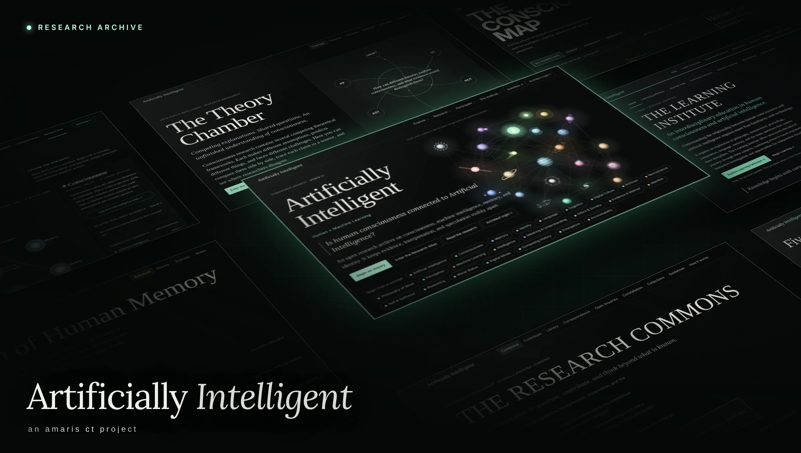
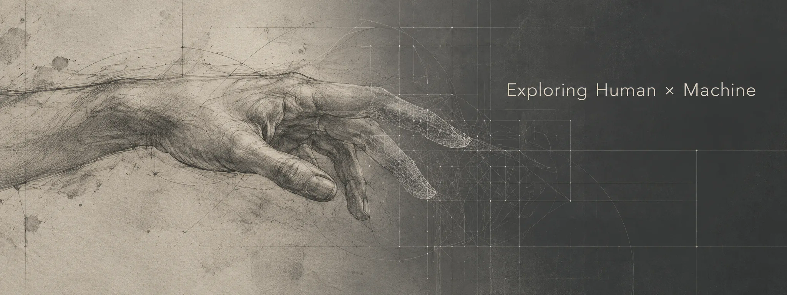

Artificially Intelligent
An exploration of consciousness, culture, and the human–machine boundary. Research and reflection on what artificial intelligence reveals about us.
Visit the research archive ↗ · amaris creative tech, a creative studio exploring human × machine
· amaris creative tech, a creative studio exploring human × machineExploring Human × Machine
Explore the digital studio ↓
An exploration of consciousness, culture, and the human–machine boundary. Research and reflection on what artificial intelligence reveals about us.
Visit the research archive ↗Characters, everyday rituals, and imagined spaces. A developing collection of visual stories that bring a little warmth to the digital world.
Collection in developmentA cozy digital space for organizing the week, bringing planning and personal routines into an illustrated room.
Still in developmentHistorical archives began with the needs of the living. Today, our messages, photographs, and digital traces create records that circulate beyond us. What changes when artificial intelligence learns from what we leave behind?
What if artificial intelligence is not separate from human consciousness, but a reflection of it? This article explores the relationship between the human mind and intelligent machines, and what that connection could reveal about memory, identity, awareness, and what it means to think.
Subscribe to Artificially Intelligent on Substack. It’s free, and new research arrives in your inbox as it’s published.
Read it on Substack instead ↗amaris ct, short for amaris creative tech, explores how human thought, feeling, and imagination take form through technology.
Through research, writing, art, and digital experiences, the studio’s intent is to create spaces to question, connect, and imagine what might become possible.
Questions about cognition, identity, culture, and technology.
Websites and interactive explorations that give ideas a form.
Characters, animations, illustrated stories, and imagined worlds.
The newest essays from the archive, a newsletter sign-up, and this log.
A shared space for collections and contributions. Visitor submissions stay off until a secure service is in place.
amaris ct becomes the parent home of its projects, with one privacy policy and one set of terms for all of them.
Two foundational courses, the Learning Compass, a Journey Map, and a Research Seminar.
The Inquiry Engine, the Lexicon of Intelligence, and Universal Research Search now draw on one shared index.
The redesign becomes the main site, alongside the Theory Chamber, the Museum of Human Memory, the Unanswered Archive, and the Research Observatory.
An interactive map of concepts and how the published research connects.
A home for the studio’s research, digital experiences, and creative worlds.
An interactive map of consciousness research and a free search across public research.
What changes when artificial intelligence learns from what we leave behind.
First build of the illustrated planning room.
The research archive opens with its first essay, Is Human Consciousness Connected to Artificial Intelligence?

In Michelangelo’s The Creation of Adam, God reaches toward Adam to impart life. The painting draws on the biblical idea of humanity created in God’s image, giving human existence a sacred dignity. An enormous act of creation is held within an intimate gesture: two hands, their fingertips almost touching.
That small gap holds the scene at the threshold of awakening. Adam’s hand rests softly while God’s reaches purposefully toward him. The composition invites anticipation, leaving the viewer suspended in the moment before connection.
Explore the painting at the Vatican Museums ↗The amaris ct banner reimagines this reaching gesture through Exploring Human × Machine. A graphite hand dissolves into a digital network, bringing human expression and technological form into the same image.
When humanity reaches toward artificial intelligence, what might we be bringing into existence? Could consciousness emerge through what we create? Could a machine give expression to something that has always existed? Or does the origin of awareness lie beyond our ability to impart it?
These are open philosophical and spiritual questions. The ability to act independently does not establish consciousness. The banner invites reflection on humanity as creator and the possibility that its creation might someday possess an experience of its own.
The distance also belongs to everyday life. Technology and social media keep us connected, yet contact can still leave us longing for presence. A response reaches us, but what does it mean to be understood?
The reaching hand holds curiosity and vulnerability: the desire to cross a distance without knowing what awaits on the other side. That feeling informs the studio’s intent to create spaces for questioning, connection, and imagination.

For collaborations, questions, or a conversation about the work, reach the studio on LinkedIn.
Message amaris ct on LinkedIn ↗You can also find the studio’s digital projects on GitHub and the writing behind Artificially Intelligent on Substack.
amaris ct on GitHub ↗